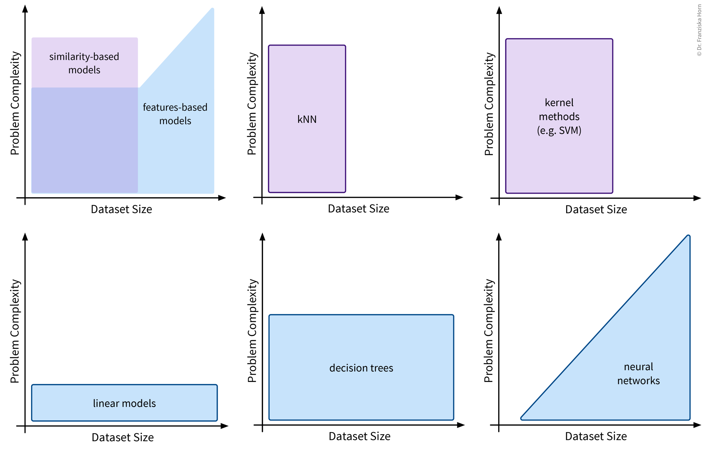
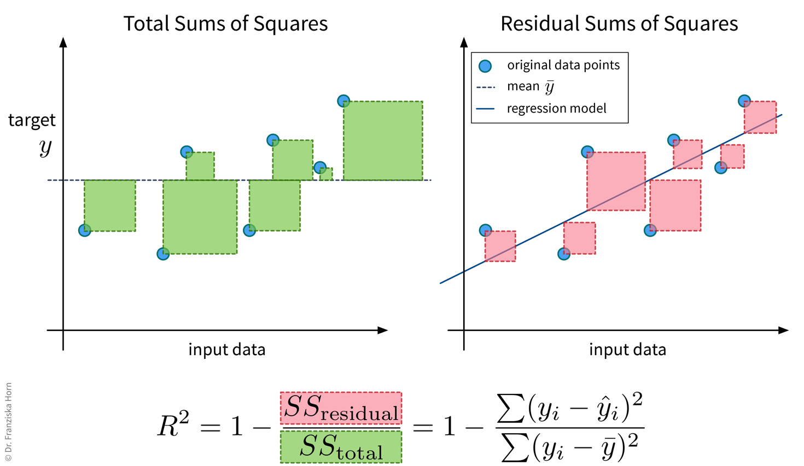

Supervised Learning Basics
Now that we’ve surveyed the different unsupervised learning algorithms, let’s move on to supervised learning:
Supervised learning in a nutshell (with scikit-learn):

.fit(X_train, y_train) method on the model to learn the internal model parameters by minimizing some model-specific objective function on the training data. Now the model is ready to generate predictions for new data points, i.e., by calling .predict(X_test), we obtain the predicted values \(\mathbf{\hat{y}}\) for the test points. Finally, to get an estimate of how useful the model will be in practice, we evaluate it by comparing the predicted target values of the test set to the corresponding true labels.In the following sections, we introduce the different approaches to supervised learning and explain when to use which kind of model, then discuss how to evaluate and select the hyperparameters of a supervised learning model.
Different types of models
The most important task of a data scientist is to select an appropriate model (and its hyperparameters) for solving a problem.
Three considerations when choosing a supervised learning model
Problem type:
What kind of problem are you trying to solve: regression or classification?
→ Depends on the type of target variable, i.e., if it has continuous or discrete values.Problem complexity:
How complicated is the relationship between the input features and target variable: linear or nonlinear?
→ Depends on the available data, i.e., how easily the target can be predicted from the inputs.Algorithmic approach:
Which type of model works best for this dataset size & complexity: features-based or similarity-based?
→ Depends on the model you choose, i.e., it either learns according to the first or second strategy.
Problem type: regression vs. classification
The type of the target variable that we want to predict determines whether we are dealing with a regression or classification problem.
Regression:
Prediction of continuous value(s) (e.g., price, number of users, etc.).
Classification:
Prediction of discrete values:
- binary (e.g., product will be faulty: yes/no)
- multi-class (e.g., picture displays cat/dog/house/car/…)
- multi-label (e.g., picture may display multiple objects)
→ Many classification models actually predict probabilities for the different classes, i.e., a score between 0 and 1 for each class. The final class label is then chosen by applying a threshold on this score (typically 0.5 for binary classification problems) or by taking the outcome with the highest score (in multi-class problems).
⇒ Whether we are dealing with a regression or classification problem is important to know and has implications for our overall workflow, e.g., how we define & measure success. However, the actual models that we use to solve these problems are very similar, e.g., almost all sklearn models exist in either a Regressor or Classifier variant to generate the appropriate output for the respective problem type.
In some cases it is even entirely up to us whether to frame the task as a regression or classification problem.
Example: A product is deemed faulty, if it breaks within the warranty period of 6 months, where we assume that normally the product would be used at most 300 times during these 6 months.
Depending on the use case, we might either be interested in how long a product lasts in total, or only whether this product will be a warranty case or not, i.e., we could formulate the problem as:
- A regression task: Predict, after how many uses the product will break.
- A classification task: Predict, if the product will break before it was used 300 times.
However, in many cases with a continuous target variable, we can learn a more accurate prediction model with the regression approach, since here the labels carry more information and edge case errors are not penalized as much. For example, in the classification case, predicting that a product is okay when it lasted 299 uses would be just as wrong as predicting ‘okay’ for a product that lasted only 2 uses.
If the workflow, where our model is later embedded in, requires a classification output, we can still transform the regression output of the model into a classification output later by simply setting a threshold, i.e., in this case if the regression model predicts a value lower than 300 we would output ‘faulty’ and otherwise ‘okay’.
Problem complexity: linear or nonlinear
In accordance with the product warranty example described above, we now illustrate what it means for a problem to be linear or nonlinear on a small toy dataset:


As illustrated in the above examples, whether a problem can be solved by a simple linear model (i.e., a single straight line or hyperplane) or requires a more complex nonlinear model to adequately describe the relationship between the input features and target variable entirely depends on the given data.
This also means that sometimes we can just install an additional sensor to measure some feature that is linearly related to the target variable or do some feature engineering to then be able to get satisfactory results with a linear model, i.e., sometimes, with the right preprocessing, a nonlinear problem can also be transformed into a linear one.
Algorithmic approaches: features-based vs. similarity-based models
Finally, lets look at how the different models work and arrive at their predictions. This is what really distinguishes the various algorithms, whereas we have already established that there always exists a regression and a classification variant of each model and some models are inherently expressive enough that they can be used to describe nonlinear relationships in the data, while others will only yield satisfactory results if there exists a linear relationship between the available input features and the target variable.
Features-based models learn some parameters or rules that are applied directly to a new data point’s input feature vector \(\mathbf{x} \in \mathbb{R}^d\). Similarity-based models, on the other hand, first compute a vector \(\mathbf{s} \in \mathbb{R}^n\) with the similarities of the new sample to the training data points and the model then operates on this vector instead of the original input features.

This distinction between algorithmic approaches is not only interesting from a theoretical point of view, but even more so from a practitioner’s perspective: When using a similarity-based algorithm, we have to be deliberate about which features to include when computing the similarities, make sure that these features are appropriately scaled, and in general think about which similarity measure is appropriate for this data. For example, we could capture domain knowledge by using a custom similarity function specifically tailored to the problem. When using a features-based model, on the other hand, the model itself can learn which features are most predictive by assigning individual weights to each input feature and therefore possibly ignore irrelevant features or account for variations in heterogeneous data. But of course, subject matter expertise is still beneficial here, as it can, for example, guide us when engineering additional, more informative input features.
Okay, now, when should we use which approach?
Features-based models:
- Number of features should be less than the number of samples!
- Good for heterogeneous data due to individual feature weights (although scaling is usually still a good idea).
- Easier to interpret (since they describe a direct relationship between input features & target).
Similarity-based models:
- Nonlinear models for small datasets.
- Need appropriate similarity function → domain knowledge! (especially for heterogeneous data)

Model Evaluation
Since in supervised learning problems we know the ground truth, we can objectively evaluate different models and benchmark them against each other.
Is this a good model for the task?
I.e., does the model generate reliable predictions for new data points?
Split the data into training and test sets to be able to get a reliable estimate of how the model will later perform when applied to new data points that it wasn’t trained on.
Quantify the quality of the model’s predictions on the test set with a suitable evaluation metric (depending on the problem type).
Evaluation metrics:- Regression: mean absolute error, mean squared error, \(R^2\)
- Classification: (balanced) accuracy
- Ranking: precision/recall (→ F1 score), hits@k
⇒ Are some mistakes worse than others (e.g., consider false positives vs. false negatives in medical tests)?
⇒ Always choose a single metric/KPI to optimize (maybe: additional constraints like runtime).Compare the model to a ‘stupid baseline’ that predicts the mean (→ regression) or most frequent class (→ classification).
Evaluation Metrics
We start with three evaluation metrics for regression problems: the mean absolute error, mean squared error, and \(R^2\).
Mean Absolute Error (MAE)

from sklearn.metrics import mean_absolute_errorMean Squared Error (MSE)

from sklearn.metrics import mean_squared_error\(R^2\)

from sklearn.metrics import r2_scoreNow lets look at evaluation metrics for classification problems.
Classification errors in detail

Accuracy

from sklearn.metrics import accuracy_scoreUnbalanced class distributions: Accuracy vs. Balanced Accuracy
Below we see the decision boundaries of two models on a toy dataset, where the background color indicates whether the model predicts the blue or red class for a data point in this area. Which model do you think is more useful?

With unbalanced class distributions, e.g., in this case a lot more samples from the blue compared to the red class, the accuracy of a model that simply always predicts the most frequent class can be quite large. But while a 90% accuracy might sound impressive when we report the performance of a model to the project’s stakeholders, this does not necessarily mean that the model is useful, especially since in real world problems the undersampled class is often the one we care about most, e.g., people with a rare disease or products that have a defect.
Instead, the balanced accuracy is often the more informative measure when evaluating classification models and can help us to distinguish between a model that has actually learned something and the ‘stupid baseline’:

Balanced Accuracy
To avoid pitfalls of accuracy: consider misclassification rates of both classes separately:

from sklearn.metrics import balanced_accuracy_scoreMulti-class problems: micro vs. macro averaging
The accuracy and balanced accuracy scores can be generalized to the multi-class classification case. Here we instead use the terms micro- and macro-averaging to describe the two strategies (which can also be used for other kinds of metrics like the F1-score), where micro-averaging means we compute the score by averaging over all samples, while macro-averaging means we first compute the score for each class separately and then average over the values for the different classes.
Micro-averaged score (→ accuracy_score):
\[ \begin{aligned} \frac{TP + TN}{TP + FN + TN + FP} = \frac{TP_\text{pos} + TP_\text{neg}}{n_\text{pos} + n_\text{neg}} & \quad \Rightarrow \quad \frac{\sum_c TP_{c}}{\sum_c n_{c}} \end{aligned} \]
\(n_{c}\) : number of samples belonging to class \(c\)
\(TP_{c}\) : number of correctly classified samples from class \(c\)
Macro-averaged score (→ balanced_accuracy_score):
\[ \begin{aligned} \frac{1}{2} \left(\frac{TP}{TP+FN} + \frac{TN}{TN+FP} \right) = \frac{1}{2} \left(\frac{TP_\text{pos}}{n_\text{pos}} + \frac{TP_\text{neg}}{n_\text{neg}} \right) & \quad \Rightarrow \quad \frac{1}{C} \sum_{c=1}^C \frac{TP_{c}}{n_{c}} \end{aligned} \]
Multi-class problems: Confusion matrix
Similarly, the table with the TP/FP/TN/FN entries can be extended for the multi-class classification case:

from sklearn.metrics import confusion_matrixModel Selection
After we’ve chosen an appropriate evaluation metric for our problem, we can use the resulting scores to automatically select the best hyperparameters for a model and ultimately the best model.
The case for an additional validation set

If the original dataset is quite big, say, over 100k samples (depending on the diversity of the data, e.g., the number of classes), then it is usually enough to just split the data into training, validation, and test sets at the start, where the validation and test sets contain about 10% of the data each and should be representative of the diversity of the original dataset. However, when the original dataset is smaller, it might not be possible to get such representative splits, which is when a technique called cross-validation (“x-val”) comes in handy.
Especially when working with small datasets, it is important that these splits are well balanced, i.e., that all classes are represented equally in the training, validation, and test sets. This is also called stratified sampling.
Cross-Validation

Most datasets are collected over longer time periods. Often, the samples are correlated over time, i.e., samples collected around the same time are more similar to each other than samples collected weeks or months apart. This is often very apparent in time series data (e.g., seasonality effects in sales data), but it can also true for other types of data (e.g., the topics discussed in newspaper articles change over time; a camera lens might slowly accumulate dust). To get a realistic estimate of how well the model will perform on new data, it is usually best to use the most recent samples as the test set. Additionally, it might be necessary to use a time series split for the cross-validation, where the model is always trained on past data and evaluated on newer data. If there is a big difference between the model performance on random vs. chronological train/validation splits, this is a strong indication that the samples are correlated over time!
Hyperparameter Tuning
Often it is necessary to systematically evaluate a given model with different hyperparameter values to find the best settings. One straightforward approach for doing this is a grid search: In a grid search, we define the different values we want to test for each of the model’s hyperparameters and then all combinations of these different values for all hyperparameters are automatically evaluated, similar to how we would do it manually with nested for-loops. This is very useful, as often the different hyperparameter settings influence each other. Conveniently, sklearn furthermore combines this with a cross-validation. However, with many individual settings, this also comes at a computational cost, as the model is trained and evaluated \(k \times m_1 \times m_2 \times \dots \times m_i\) times, where \(k\) is the number of folds in the cross-validation and \(m_1...m_i\) are the number of values that need to be tested for each of the i hyperparameters of the model.
For example, with two hyperparameters, the grid search results could look something like the plot below, which shows a heatmap of the average accuracy achieved with each hyperparameter combination of a model in the cross-validation:

While sklearn’s grid search method tells us directly what the best hyperparameter combination is out of the ones it tested (marked with a red star in the plot), it is important to check the complete set of results to verify that we have covered the whole range of possible hyperparameter values that could give good results. For example, in the plot above, we see a peak in the middle with the results getting worse to the sides, i.e., we know that better hyperparameter values are unlikely to lie outside of the range we’ve tested.
It is generally a good idea to first start with a large range of values and then zoom in to the area that seems most promising. And of course knowledge about the different algorithms helps a lot in choosing reasonable settings as well.
Besides the basic grid search, there also exist other, more advanced hyperparameter tuning routines. For example, sklearn additionally implements a randomized search, and other dedicated libraries provide even fancier approaches, such as Bayesian optimization.
from sklearn.model_selection import GridSearchCV, RandomizedSearchCV